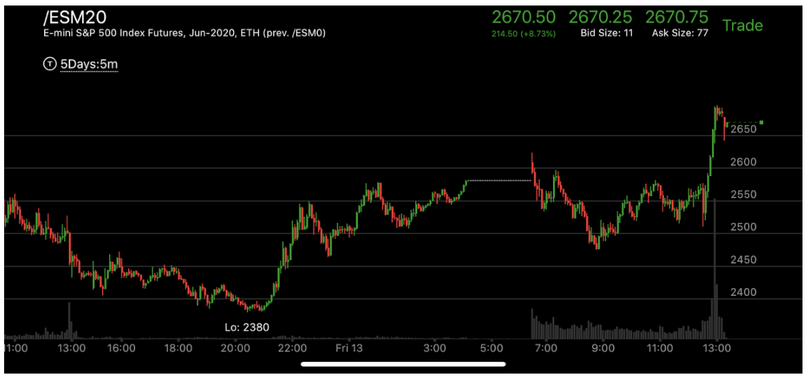

远距离两段走势
- 一个走势开始有第一浪，然后经过大幅的震荡和运动，再次出现第二浪。中间可能相隔几个小时，
甚至一天以上。但是却是两段走势。
- 第一浪结束后，走势中间会缓慢出现新的走势极点，比如上涨的会出现新高。但是幅度和速度都
不如第一浪。

图示:1：00的时候，它从底部快速上涨，这个其实就是第一浪上涨，
在越过前面走势的阻力点后，早晨开盘，它猛烈大涨，幅度和速度都超过了第一浪。这样就反转了。
可以看到它反转的时候，在高处形成了下跌的相对弱势。8：00的点更高，下跌速度更慢。
所以即使是一浪反转也是需要相对弱势的。

图示:20：00开始第一浪，幅度是130个点。中间涨停，
创新高，但是大幅拉回。可以看到拉回速度很快。说明是一个反向走势。然后在震荡几个小时后，
收盘前大涨。涨幅和速度都超过第一浪。